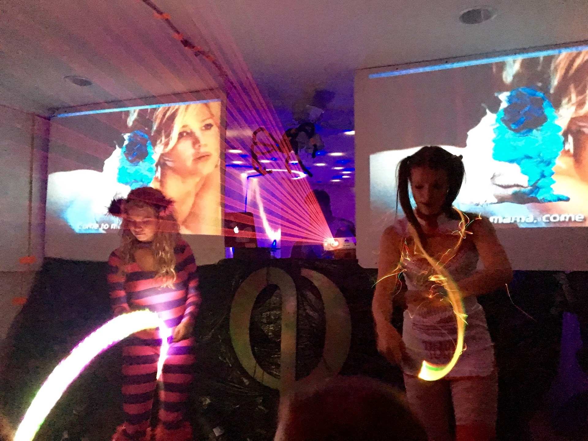

My friend Alejandro Pinto and I have alwasy been very into music. As a frequent concert spectator, him and I both began to discuss how artists, particularly those that are most successful, brand themselves. In these days, many are famous for their music solely, but a trend we began to notice was our belief that artists who were more popular(And definitely those earning more money per show) were gaining popularity through aspects of their social media presence rather than their music. We wished to apply the added value that visuals created to a concert we would be throwing for Halloween at school. As someone who tries on and off again to get musical recognition at my school, I thought visuals could set me apart. We believed the visual forms could add intrigue to our event relative to those our fraternity typically throws, and this we turned out to be true in the end.
The social media presence for professional DJs I am discussing is twofold. The first embodiment of this presence is straight forward: how their personality and brand shine through on social media. Great examples of this case include artists like Dillon Francis, Diplo, Getter, and many others, typically belonging to the larger labels such as Dim Mak or Mad Decent. These artists are known well simply for the characters they embody everyday. I imagine they sell more merchandise from this, and probably experience a boost in the size of the audiences listening to their music due to their popularity. The second example is more relevant to visual making. Artists like Porter Robinson, Dillon Francis, and Major Lazer I argue are also more popular due to the branding that occurs through their visuals. While it is hard to pull real data on this subject, I can report some findings.
As of 3/27/16 Porter Robinson has 4.12 Million Soundcloud followers and 284,000 Instagram followers; Major Lazer has 3.92 million Soundcloud followers and 1 million Instagram followers; Dillon Francis has 6.08 million Soundlcoud followers and 1.1 Million Instagram followers. Their respective networth is $1 million for Porter, $15.5 million for Diplo, and an unknown figure for Dillon Francis, though I would estimate his earnings to be more near to Diplo's than Porter's. Pricing estimates fro a single show come in at $300-499k for Diplo, $150-299k for Dillon, and $50k for Porter. It is worth mentioning that the site with Porter's figure quotes Diplo's price as $25k which is highly suspect considering their relative fame. Youtube results show 355,000 results for "Porter Robinson Live", 941,000 for "Diplo Live", and 332,000 for "Dillon Francis Live". As a reference, "Dimitri Vegas & Like Mike Live" returns 548,00 results (Ranked #1 in the world by DJ Mag), "Hardwell Live" returns 1,000,000 results(ranked #2 in the world), and "martin garrix live" returns 910,000 results(#3). The number seems to drop below 500,000 results for any DJ past #10 on the DJ mag list. Here, Diplo shows up as #25, Porter shows up at #52, and Dillon Francis shows up as #67.
Back to discussing the importance of visuals, the concert experience of the aforementioned artists is very different from many that are rising. When watching a typical performance at any given venue, if the DJ/Artist does not yet have the resources to bring their own LED screen on tour, they often are left to use what is available. For the venues that do have these screens, I find that most all top artists have their own branded visuals. The best example of this is Porter seen here where an entire team of artists came together to create Porter's "glitchy surrealism" to be put up on screen by his VJ, ghostdad. The difference between these DJs and who I argue may be less likely to become successful is this branding of onscreen imagery. This belief is predicated on the belief that the visuals are starting to become almost as important as the music itself in regards to artistry as the tools to create these images are becoming more commonplace considering the fact that the cost of LED screens has dropped dramatically over the years.
My entire argument leads to my advice that up and coming artists should spend an appropriate amount of time on their imagery as well as those who do not spend time on this component receive visuals that are often default for their respective programs. I have noticed this even at venues as large as Tomorrow World in 2015. Here, I could notice that more people had their phones out to film artists' sets with higher visual intricacy and intensity than those that rested on default visuals and their music alone. These filmed moments I suspect are what most often lead to DJs being reposted on each media site such as Vine, Youtube, Snapchat, and Instagram.
I'll start this by talking simply about the visual making process and what it is like to render the videos. It starts off with the main programs. Resolume 7 is the best program fro any VJ (Video Jockey). It is crazy expensive, yet allows you to do almost anything you want in the field. More importantly, it is the best tool for live performance of this art. When combined with a Midi Pad, one can create stunning live performances like those of Ghostdad. The other software I would recommend is Cinema4d which allows users to get even more creative, yet here the learning curve and amount of time necessary to create amazing work is significantly greater than Resolume, despite them being completely different programs. The last software I will mention is Magic. This is definitely the easiest program to master and has many of the same capabilities that Resolume and Cinema4d offer, but at a much cheaper price. This was what I used to create all the visuals above and has been my secret for quite a while. The software is new, and new functionalities are added to it regularly. Once a visual is complete and it reacts to the music Nathaniel Senaas you like, the rendering process occurs. The rendering process is only necessary for producing a finished video like a music video whereas a live performance does not necessitate the rendering and is done in time with the music. Rendering for a 1080p 60fps video on my 2012 Macbook Pro takes 7 hours on average for a 3 minute video as it renders it frame by frame. I recommend rendering at 60fps because when uploaded to Youtube, 30fps video at 1080p is compressed to such a degree as to reduce the quality of the video beyond what may be professionally acceptable. Computers with great graphics cards can render far faster, and I recommend using those for the entire process, as they can also help with the visual making process by showing what it will look like at true to life frame rates.
The second thing I have noticed is how prolific visual making software is at the moment. channels like Trap Nation garner millions of subscribers and promote content which uses sound reactive imagery. In trying to create my own page, Tracks, I learned just how difficult it is to use this same strategy, despite having far more variation in each visual. While I believe I could compete with such a page by producing better content more in tune with the music, these pages are simply able to push more content everyday, something my computer cannot handle. In order to get views in line with how many these channels get, one must be ranked highly for any given song when searched. The problem with this is that it requires having many subscribers and views to begin with. So starting any sort of channel I imagine would be intensely difficult. This led me to try Instagram, believing that the shorter videos could draw attention faster. This was not a viable method of gaining traction because the display quality of Instagram does not allow for high enough definition.
Along these same lines, I tried to reach out to professional DJs to get their feedback, expecting some of them to want to use the material for their own purposes, which might help me out. I also optimistically expected I might be able to produce visuals for them while performning in town, especially forr those who I knew had none of their own. This was not the case. Most of them were happy to have the product made, but never did anything with it. I have since become very busy, and can not find the time to produce or render these videos. I expect in the future I may try again with a faster computer and the use of one of my buddies' creations, Keplerbot.
As previously mentioned, my friend and I threw an event with visuals and found it to be wildly successful. Here is what we did.
We ended up purchasing some 1000 lumen projectors from Aliexpress that we were quite happy with. In total, they were around $100. By connecting them through an HDMI splitter, we were able to get both to project video simultaneously. We wanted to use an HDMI to CAT6 converter for transmission but found items we purchased did not work, so we used a long, traditional HDMI cable. By linking up Magic to a midi pad, we were able to changee the visuals to the music with each being sound reactive. We had logos for each of our four performers on screen for branding purposes, which allowed us to negotiate all of them performing for free. We recommend all up and coming basement party throwers (It's how all the best get their start) use a set up like this because it truly drew a different energy from the audience despite being so low budget. Additionally, we ended up having the opportunity to perform our visuals at a Waka Flocka Flame at UVA concert for a small bit of compensation. I guess you could call my friends and I professionals.
